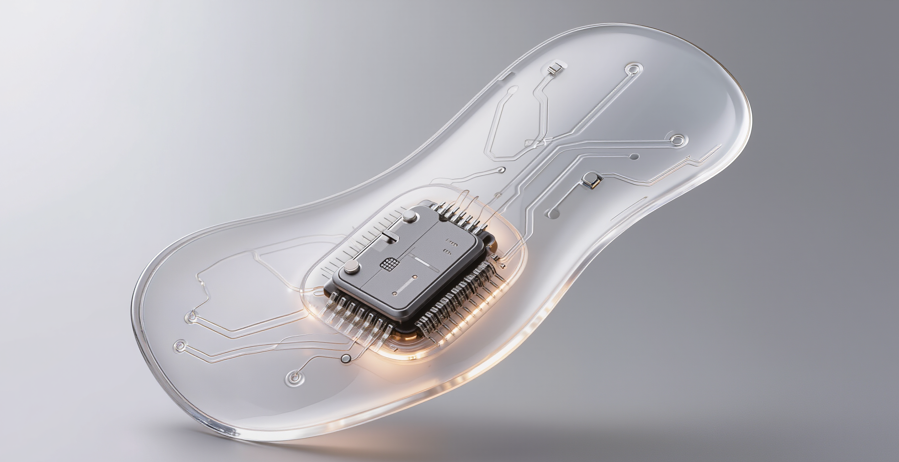

Mirae
Sensing what the body knows before the mind does
Mirae is a speculative bio-adaptive system that helps people sense stress, avoidance, and habit loops before those patterns surface — then uses an AI guide to step in at the right moment and support a better choice.
Built for FigBuild 2026 with Chareese Lam, the concept pairs a wearable sensing patch with a companion interface. Together they translate the body's quiet signals into feedback a person can actually act on, turning an invisible internal state into a moment of self-awareness rather than one more number to track.

Mirae — FigBuild 2026
The Premise
The body knows first. A tightening chest, a held breath, the pull to put something off — these register long before the mind can name what's happening. Mirae starts from that gap: the window between what the body feels and what we consciously notice is exactly where better choices get made, or missed.
Most wellness tools arrive too late. They report on a state after it has passed — steps walked, hours slept, a stress score at the end of the day. Mirae asks what it would mean to meet a state as it forms, while there's still room to respond.
What Mirae Is
A patch that senses, a guide that responds. The wearable reads physiological and neurochemical signals through the skin; the AI reads the pattern and surfaces a small, timely nudge — a prompt to breathe, to pause, to notice the loop you're about to repeat.

The form was a deliberate choice. A bio-sensing device can easily read as clinical or surveillant, so we designed the patch to feel closer to skin than to hardware — translucent, soft-edged, quietly present rather than demanding attention.
The Concept in Motion
The concept film walks through a day with Mirae: how a signal becomes a nudge, and how a nudge becomes a choice.
Designing the Invisible
The hardest part was picturing what can't be seen. Hormonal and neurochemical shifts have no natural image, and the wrong visual language turns a supportive tool into a clinical readout — or worse, a new source of anxiety about your own body.
So the work became translation: complex internal processes rendered as calm, legible cues, held in a supportive tone from start to finish. Mirae observes and offers; it never diagnoses or scolds. The aim was self-awareness, not self-optimization.
What We Learned
Ground the speculation in feeling. Designing for something this personal taught us to anchor a forward-looking concept in genuine emotional need rather than futuristic aesthetics — to simplify scientific complexity into something a person can feel understood by, and to use design to build awareness of the self instead of pressure to perform.
What's Next
- Refining the sensing logic behind how internal states are detected
- Expanding the AI guidance system to adapt across different emotional and behavioral contexts
- Deepening the research into interoception, neuroplasticity, and habit change
Outcome
A concept that feels both ambitious and believable. Mirae proposes a closer relationship between body, behavior, and technology — one where a device helps you notice yourself in the moment, and meet what you're feeling before it decides for you.